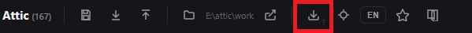

Processing -> Editing - the most important functions to master
The Multi-Zone selector Zone
The input port is an audio where you connect your sources and the output are :
1 - audio, the same as input no modification.
2 - zones that means time coordinates of your track defined by you
3 - the whole duration of the track
In order to select zones you select with your mouse when you defined that way a specific time zone then you click on the « add zone » button, you can select as many zone as you want.
This node is useful when you want to :
cut zones
add external sounds at a particular moment of the track
Examples
Click on the picture to enlarge
A zone has been selected, the component zone mask cut the zone. You can see that in the second graphic.
The zone mask component has a option, it's removing the selected zones or it can keep them only.
Click on the picture to enlarge
If you want to put a sound on the zones, the use the Place sound on zones component as below :
Click on the picture to enlarge
If you want to select a signle zone, apply on it an effect then replace it exactely where it was on the track. You will use these nodes this way :
The extract zone, extract only one zone with two parameters : start point, duration, then we apply a tremolo effect and the reinsert zone will take the modified part and insert it into the start track at the same position it was extracted. (beware the modified zone sound should be the same length than the duration of the extracted zone.
Mixer component
Click on the picture to enlarge
This component collects as many inputs as desired and positions different tracks one on top of the other.
If you want a track to begin at a certain point just add silence before with the component « add silence ».
Click on the picture to enlarge
An other solution is to calibrate one track on the length of the other with the « Track aligner » component.
Click on the picture to enlarge
The audio join component places a second track directly after the first.
Click on the picture to enlarge
Some other generic components
The loop component repeat the last tracks n*
Click on the picture to enlarge
With the recorder you record the microphone entry of your device
Click on the picture to enlarge
You can play midi files, with the midi player component. If you want to use a specific soundfont. You download it in the top menu bar :

Notice : attic accepts only sf2 soundfont format for midi instruments.
With audio output component you can save your new tracks with the .wav format.
With wav ->MP3 component you can save your new tracks with the .mp3 format.